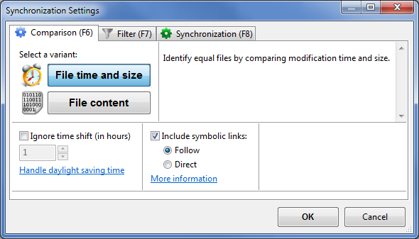

Comparison Settings

Symbolic Link Handling
FreeFileSync lets you choose to include symbolic links (also called symlinks or soft links) when scanning directories rather than skipping over them. When included, you can select between two ways to handle them:
- Direct:
Evaluate the symbolic link object
directly. Symbolic links will be shown as separate entities.
Links pointing to directories are not traversed and the link object
is copied directly during synchronization.
- Follow:
Treat symbolic links like the object they are pointing to. Links
pointing to directories are traversed like ordinary directories and
the target of each link is copied during synchronization.
Note
- Under Windows the symbolic link options apply to symbolic links, volume mount points and NTFS junction points.
- Copying symbolic links requires FreeFileSync to be started with administrator rights.
I. Compare by File time and size
This variant considers two files with the same name as equal when both modification
time and file size match. The following categories are distinguished:
- file exists on one side only
- left only
- right only
- file exists on both sides
- different date
- same date
- equal
- conflict (same date, different size)
II. Compare by File content
Two files with the same name are marked as equal if and only if they have
the same content. This option is more useful for consistency checks
rather than backup operations since a bitwise comparison can be slow.
- file exists on one side only
- left only
- right only
- file exists on both sides
- equal
- different content